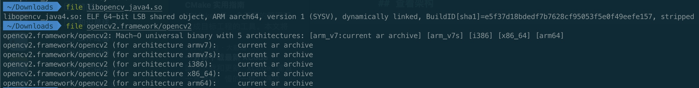
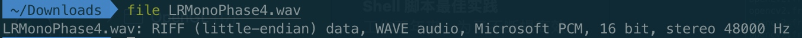
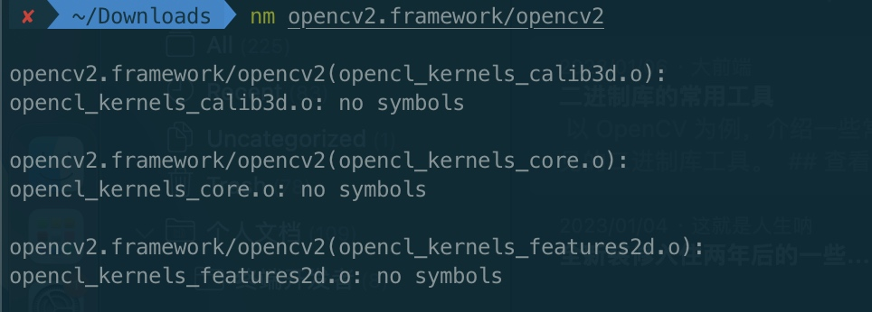
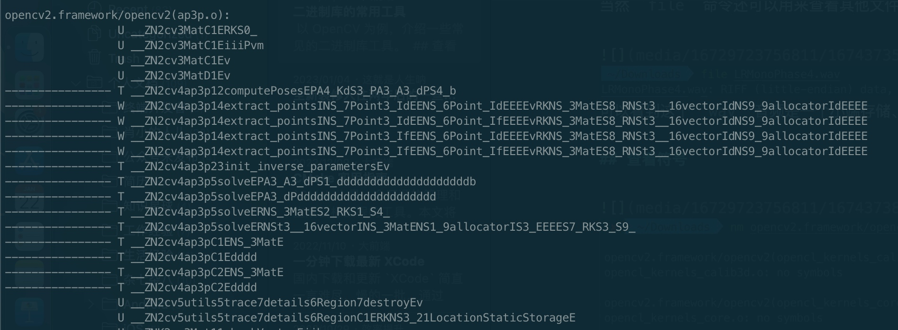
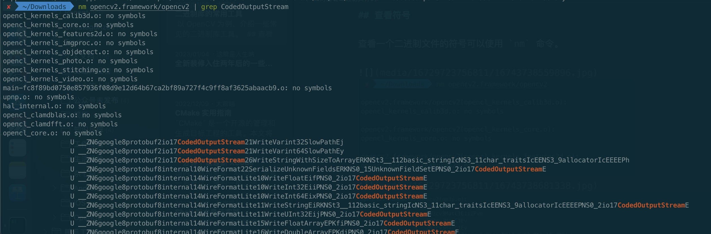

iOS framework 静态库相关知识
以 OpenCV 为例，介绍一些常见的二进制库工具。
查看架构
可以使用 file 命令查看支持的架构，也可以看到是静态库还是动态库。

当然 file 命令还可以用来查看其他文件的一些基本参数，比如查看一个音频文件的参数 👇🏻

可以看到这个
wav 音频是一个小端存储、采样数据格式为 PCM、16 位深、采样率 48000。
查看符号
查看一个二进制文件的符号可以使用 nm 命令。


一个比较常见的操作是配合 grep 来查找过滤某些符号 👇🏻
nm opencv2.framework/opencv2 | grep CodedOutputStream

nm 的输出里，除了能看到具体符号外，符号的左侧还有个字母，比如 U、S 等，代表该符号的类型。
| 符号类型 | 解释 |
|---|---|
| A | Absolute symbol, global |
| a | Absolute symbol, local |
| B | Uninitialized data (bss), global |
| b | Uninitialized data (bss), local |
| D | Initialized data (bbs), global |
| d | Initialized data (bbs), local |
| F | File name |
| l | Line number entry (see the –a option) |
| N | No defined type, global. This is an unspecified type, compared to the undefined type U. |
| U | No defined type, local. This is an unspecified type, compared to the undefined type U. |
| S | Section symbol, global |
| s | Section symbol, local |
| T | Text symbol, global |
| t | Text symbol, local (static) |
| U | Undefined symbol |
类型较多，不过其实一般只需要记住这两个基本原则：
- 大写字母代表
global符号，小写字母代表local符号 U这种符号是undefined，很多时候链接时找不到符号有可能是这里的问题：虽然有符号，但是符号是Undefined
因为经常同一个库支持多个架构，我们还可以限制只打印某个架构的符号 👇🏻
nm --arch arm64 opencv2.framework/opencv2
导出和查看 DWARF
DWARF 的全称是 debugging with attributed record formats，是一种源码调试信息的格式，iOS 经常用到，之前已经单独写了文章，想起可以参考 iOS 符号之 DWARF 和 dSYM。
主要是用 dsymutil 导出调试符号文件，然后用 dwarfdump 查看。
多架构拆分、合并
一个库可能支持多个架构，比如 arm64、x86_64 等等，我们可以使用 lipo 做一些拆分合并操作。
拆分多架构库
将某个多架构库的其中某个架构的内容抽成独立的库。
lipo -extract arch_type file
🌰 👇🏻：
lipo -remove x86_64 opencv2.framework/opencv2 -output openCV2_arm64
注意，通过上面的方式得到的库还是多架构库，只是只包含一种架构。
如果想获得一个单架构库可以通过下面的方式 👇🏻
lipo -thin arch_type <input> -output output
🌰 👇🏻：
lipo -thin arm64 opencv2.framework/opencv2 -output openCV2_arm64_thin
移除某个架构
lipo -remove arch_type <input> -output <output>
🌰 👇🏻：
lipo -remove x86_64 opencv2.framework/opencv2 -output openCV2_without_x86_64
多个库合并成单个多架构库
lipo -create <input1> <input2> ... -output opencv2.framework/opencv2
🌰 👇🏻：
lipo -create openCV2_arm64 openCV2_x86_64 -output opencv2.framework/opencv2
库的合并
举个例子，如果你的 Test.framework 里用到了另一个 Test.a，一般来讲我们可以将 Test.a 合并到 Test.framework 里，这样使用方只需要理解和引用 Test.framework 就可以了，不需要关心 Test.a 的存在。
我们可以通过下面这个方式合并：
// 创建静态库
libtool -static -o output input1 input2 input3 ...
// 创建动态库
libtool -dynamic -o output input1 input2 input3 ...
libtool -static -o Test.framework/wxaudio Test.a Test.framework/wxaudio
此外，一些常见的参数如下：
| 参数 | 作用 |
|---|---|
| -v | 详细模式，会把执行细节打印出来，方便查问题 |
| -arch_only | 只合并某个架构，其他架构会被忽略 |
转载请注明出处：iOS framework 静态库相关知识 - 专业点
欢迎关注我的公众号

推荐

公众号推荐
欢迎关注我的公众号一起愉快的交流。